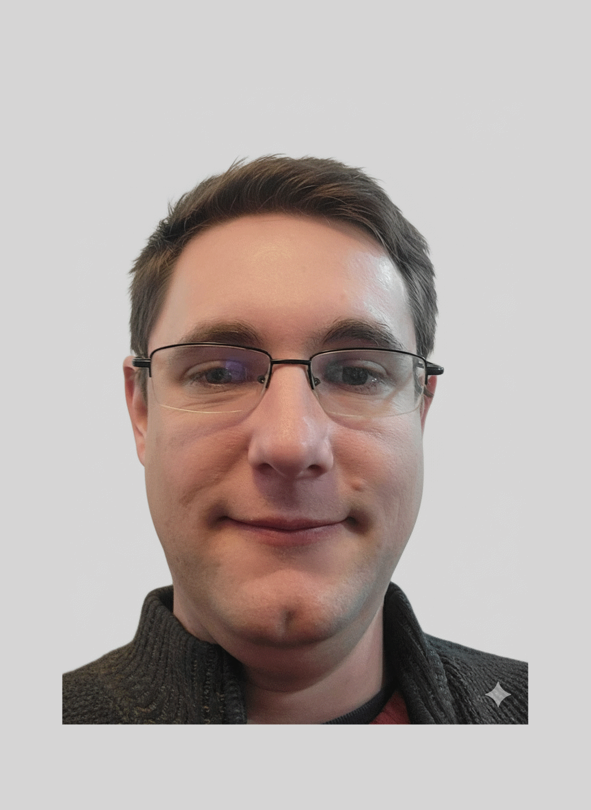

Pursuing a career in software development

Hello! I am pursuing a career in software development. I have graduated from Fresno State University with a B.S. in Computer Science, specializing in simulation and artificial intelligence. I have a strong foundation in diverse programming languages and experience in both academic tutoring and industrial technology.
A deep learning AI model trained to recognize age from photographs. Trained on the IMDB-WIKI dataset, it uses tensorflow keras to run prediction on a given set of images.
A fully working image board where users can create or reply to threads, and post videos and images. Built as an experiment in "vibe coding".
A mod for the video game *Barotrauma* that lets users save and load circuit blueprints. It works using a C# to Lua interconnect and has garnered over 3,000 users.
A Unity game used by the psychology department of Fresno State to diagnose ADHD in children. It uses greenscreens and eye tracking to measure responses to timed distractors.
A modification of the video game *Midi Playground* used to automatically create YouTube shorts. Input a Midi file and the program generates a fully animated and synchronized video with one click.
An AutoHotKey script that can record and replay mouse and keyboard commands. It can also export AHK scripts of the recording.
Email: maxjohnson87@protonmail.com
Phone: (559) 765-5207
GitHub: https://github.com/Max112358